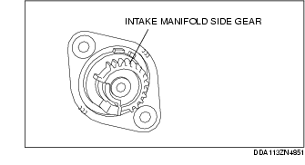
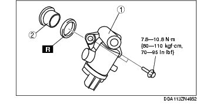
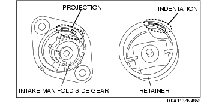

Variable intake air shutter valve actuator removal/installation [ZY]
- • Be careful of the following after removing the actuator to prevent abnormal gear wear and gear lock which could result in shutter valve malfunction.
-
- Do not pull out the intake manifold side gear.

- - Do not allow foreign material to contact the intake manifold side gear.
- - Keep the inside of the actuator away from foreign material.
- • Improper installation of the actuator and retainer will cause gear lock and might result in shutter valve malfunction. To prevent this, install the actuator and shutter valve as described in the following procedure:
1. Disconnect the negative battery cable.
2. Remove in the order indicated in the table.

|
1
|
Variable intake air shutter valve actuator
|
|
2
|
Retainer
(See Retainer Removal Note.)
(See Retainer Installation Note.)
|
3. Install in the reverse order of removal.
Variable Intake Air Shutter Valve Actuator Removal Note
1. After removing the actuator, cover it with a plastic sheet to prevent foreign material from entering the inside of the actuator.
Retainer Removal Note
1. After removing the retainer, cover it with a plastic sheet to prevent foreign material from contacting the intake manifold side gear.
Retainer Installation Note
1. Install the retainer by positioning the projection on the intake manifold with the indentation on the retainer.

2. Be careful not to shift the retainer installation position.
Variable Intake Air Shutter Valve Actuator Installation Note
1. Verify that the retainer installation position has not shifted.
2. Verify that the gasket is installed.
3. Verify that intake manifold side gear and actuator side gear are engaged properly so that the actuator can be installed without any excessive force.